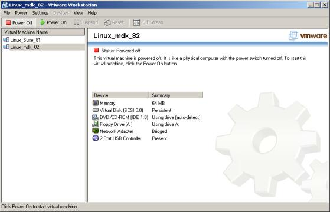
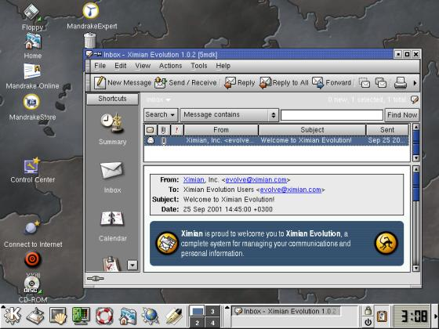
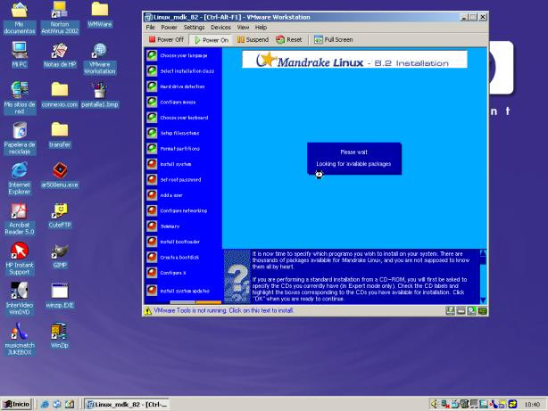
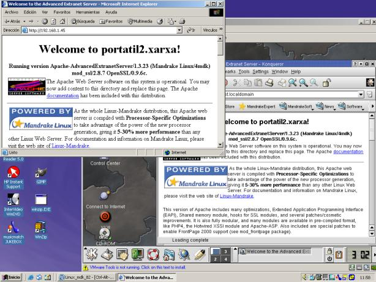
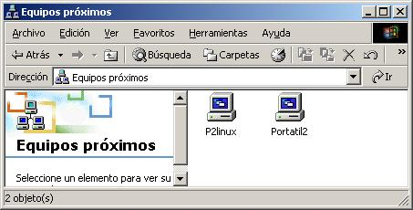

Так ли хороша VMware для
пользователей Linux?
Автор: (C) Alan Ward
Перевод: (C) Александр Саввин
От редактора: Тема работы с VMware задела меня "за живое",
поэтому я позволил себе немного "по-умничать" и вмешаться в перевод Александра.
:)
За и против VMware для энтузиастов Linux
VMware -- это виртуальная машина. Другими словами, она эмулирует персональный
компьютер на базе Intel, точно также, как это делают эмуляторы машин на базе
Motorola. Хотя факт эмуляции платформы Intel на... платформе Intel говорит о
том, что реально VMware может передавать непосредственно процессору для
выполнения большинство инструкций без промежуточной трансляции, увеличивая таким
образом скорость работы. Это несколько отличается от виртуальной машины Java, в
которой эмулятор получает byte-код Java для перевода его в инструкции процессора
Intel перед выполнением.
Да, это коммерческая программа, т.е. вы должны заплатить за нее,
хотя ознакомиться с ней можете бесплатно. Теперь, прежде чем перейти к деталям,
разрешите мне огласить свою позицию относительно коммерческих программ: я не
являюсь их противником. Я пользовался некоторыми из них и они действительно были
хороши и стоили вложенных денег. Однако, я предпочитаю открытое ПО не из-за
экономических соображений, а потому что, если (или даже, когда) что-то не
работает или чем-то меня не устраивает, я могу самостоятельно это исправить,
независимо от корпорации, которая делает это, когда ей удобно. Я ничего не имею
против VMware, но с другой стороны, по указанной выше причине, я предпочел бы
рассматривать свободную версию программы подобного типа.
Для чего пользоваться VMware?
1. Первая причина -- это когда она вам действительно необходима. Например, на
работе я пользуюсь ноутбуком, который делят со мной еще несколько человек (не
являющимися пользователями Linux) и делают это, в основном, по производственной
необходимости:
- должна работать Windows 2000
- нельзя разметить диск, как двух-загрузочный
С другой стороны, я прохожу курс по созданию и администрированию web-сайтов с
Apache и PHP, для чего желательно использовать ноутбук с Linux и X Windows[*1]
2. VMware создает виртуальную машину, которую можно сконфигурировать по своим
требованиям, независимо от реальной аппаратной конфигурации компьютера. К
примеру, по умолчанию на жестком диске создается файл на 4 Гб для эмуляции диска
виртуальной машины. [*2] Для нее
этот файл выглядит как SCSI-диск, являющийся на самом деле файлом на
IDE-диске.[*3] Также по
умолчанию IDE CD-привод используется только как... IDE CD-привод. Хотя можно
указать, чтобы он воспринимался как SCSI-привод, либо установить ISO-образ
CD-ROM'а в виде привода с установленным в него диском (например, для
инсталляции). Можно пользоваться аппаратными средствами, которых в
действительности нет. Например, ленточные приводы. Интересная особенность
открывающая простор для экспериментов.

3. Кроме того, можно одновременно запустить несколько виртуальных машин и
установить на своем компьютере локальную виртуальную сеть между
разными операционными системами. Это удобно, чтобы
- ознакомиться с новой ОС без выделения раздела на диске (удалить можно
простым щелчком мыши :-)
- посмотреть, как новая ОС интегрируется в существующую сеть, перед тем, как
форматировать (что иногда неприемлемо) компьютер
- с помощью LCD-проектора показать, как интегрируются несколько ОС

4. Если необходимая программа не работает в основной операционной системе, то
ее можно запустить "под виртульаной машиной".
Довольно интересно решается проблема пользователей Linux, которым нужны
программы, доступные только в Windows (как правило, коммерческие). Была
некоторая проблема с текстовыми процессорами и электронными таблицами, пока
StarOffice и OpenOffice не стали общедоступными. Хотя у меня сейчас возникают
обратные проблемы -- я нахожу интересную программу под Linux, для которой сложно
найти версию для Windows, либо вообще нет свежей версии. Несколько примеров:
средства построения математических графиков, такие как gnuplot и scilab, или
просто любимые мною пользовательские программы (например, Evolution).
Почему не нужно пользоваться VMware?
1. Скорость. В конце концов, мы делим единственный процессор между
несколькими операционными системами. Хотя острота проблемы снижается, если
запускать пользовательские программы одновременно только в одной системе.
Кстати, было бы неплохо установить VMware на многопроцессорных системах,
назначив по одному процессору каждой виртуальной машине... хотя, наверное, это
невозможно без полной переделки ядра основной операционной системы.
2. Еще раз скорость. Для приемлемой скорости, в распоряжении виртуальной
машины должно быть достаточно оперативной памяти. Постарайтесь выделить по
крайней мере по 128 МБайт для каждой операционной системы, иначе готовьтесь к
интенсивному свопингу. На ноутбуках это проблематично в любом случае (учтите,
что жесткие диски ноутбуков не предназначены для интенсивной работы).
Постарайтесь не использовать свопинг в виртуальных машинах.
3. В третий раз скорость. Вся периферия (диски, сетевые карты) делятся между
виртуальными машинами. Например, если при большом везении на физической машине
запущены две виртуальных, то общая полоса пропускания делится между ними поровну
(по одной трети -- не забудьте про основную систему!). Реальные результаты могут
быть намного ниже -- это зависит, в основном, от дизайна и эффективности
основной операционной системы.
Установка VMware
Пользоваться VMware достаточно легко. Я устанавливал только версию для
Windows (из-за нехватки скорости для скачивания), и, как отмечено выше, именно
эта версия мне более всего необходима. Однако, разумнее было бы использовать
более стабильную ОС в качестве основной -- т.е. запускать виртуальную машину с
Windows на компьютере с Linux, а не наоборот, как я вынужден делать.[*4]
Установка Linux на виртуальную машину очень проста:
- создать новую виртуальную машину с желаемыми характеристиками
- вставить загрузочный CD с Linux в привод (или установить ISO-образ в
качестве виртуального CD-привода)
- включить виртуальную машину
Таким способом я без проблем устанавливал SuSE 8.1 и Mandrake 8.2, хотя
виртуальная машина настаивала на загрузке с IDE CD-привода. Однако, после
установки я смог включить SCSI-привод.

Виртуальная машина имеет доступ к сети через разработанный VMware Inc.
протокол (так называемый, bridging протокол)[*5], который
доступен, если только сетевая карта включена в основной системе. При этом
виртуальной сетевой карте можно либо назначать статический IP-адрес, либо
получать его от DHCP-сервера в сети.
После этого можно подключаться к серверу виртуальной машины с самой
виртуальной машины, других компьютеров в сети и даже с основного компьютера
через внешний сетевой адрес виртуальной машины.
Учтите, что для своего протокола моста (bridging protocol) VMware назначает
адреса основной системе и виртуальным машинам из подсети 192.168.19.0/24 и
192.168.199.0/24 -- их нельзя использовать для других соединений.[*6]

При наличии других, более прямых способов передачи файлов из одной системы в
другую, наиболее легким, который я нашел, является установка Samba-сервера на
виртуальной Linux-машине. Этот способ работает достаточно хорошо и логически
быстрее 100 Мбитного соединения, хотя может быть неприемлемым в производственной
сфере.[*7]

Конечным результатом моих изысканий является то, что концепция VMware, при
всех ее недостатках, достаточно привлекательна. Она может быть полезна в среде
разработки, для программирования или для системного администрирования. Но ее не
стоит использовать в сфере производства -- если действительно необходимы две
операционных системы, лучше купить два компьютера!
PS. Не желает ли кто-нибудь перевести эту статью -- я написал ее в духе
программной лицензии GPL, т.е. вы можете ее свободно (и это поощряется)
копировать, пересылать и переводить, только, пожалуйста, ПОЖАЛУЙСТА, пришлите
мне сообщение по e-mail! Мне нравится следить за переводами -- это хорошо для
учебного плана :-)
Alan Ward
Алан преподает компьютерные науки в Андорре на уровнях высшей школы и
университета. Его увлечениями также являются научная фотография (как цифровая,
так и традиционная), треккинг, рок и коллекционирование процессоров.
Примечания редактора
[*1] Очень
многие делают ошибку в названии "иксов" -- автор статьи не исключение. :)
Правильное название X Window (в единственном числе). Точнее -- X Window System.
А ещё лучше `man X` и сразу всё станет понятно. Помню случай, когда в
fido7.ru.linux распекали кого-то на эту тему. :)
[*2] Увы, но
автор статьи заблуждается -- VMware не создаёт сразу файл размером в 4 Гб.
Изначально размер этого файла не превышает нескольких десятков или сотен
килобайт и растёт по мере заполнения "дискового" пространства виртуальной
машины. И совсем необязательно создавать диск такого размера. Просто 4 Гб -- это
максимальный размер для виртуальных дисков.
[*3] VMware
может эмулировать как SCSI так и IDE-диски. Почему автор так усиленно
акцентирует внимание именно на SCSI -- не понятно.
[*4] Если
перед вами встанет вопрос кому быть host-машиной, Linux или Windows, то лучший
выбор это всё-таки Linux. И не потому, что эта рассылка ориентирована на
Linux-пользователей. :) Windows работает пошустрее в качестве guest-машины, чем
Linux в этой же роли под управлением "форточек" (по крайней мере, "иксы"). Тем
более можно запустить VMware на отдельной консоли. Например, вот так: `xinit
/usr/bin/vmware -x -q /home/alex/vmware/nt4/nt4.cfg -- :1 &`
[*5] Для тех,
кто не в курсе -- у виртуальной машины существует три типа подключения к сети:
bridged, NAT и host-only. Bridged работает, используя сетевую карту и нужен в
том случае, если вы хотите "расположить" свою виртуальную ОС в "общей" локальной
сети. NAT и host-only используют виртуальные сетевые интерфейсы, которые создаёт
VMware. При этом NAT используется, если вы хотите разместить виртуальные машины
в отдельной подсети и использовать host-машину как шлюз для общения с "внешним"
миром. Host-only нужен в том случае, когда вы хотите ограничить виртуальным ОС
доступ "наружу". В принципе, вы можете это обойти, если настроите proxy-сервер
на host-машине. Есть ещё custom-подключение, но это частный случай одного из
трёх вышеперечисленных вариантов.
[*6] Хм.. Не
знаю, кто как, но я ничего не понял из того, что хотел сказать автор. :) Хотя,
возможно, догадываюсь. Дело в том, что при настройке виртуальных сетевых
интерфейсов, программа конфигурации (я сейчас говорю за вариант VMware для
Linux) пытается определить свободный диапазон адресов для виртуальной сети.
Возможно, у Алана VMware выбирала всегда эти два диапазона, из чего он сделал
вывод, что они являются зарезервированными. Это не так. Вы можете отказаться от
режима автоматического определения диапазона свободных сетевых адресов и ввести
их вручную. Главное, чтобы вы отдавали себе отчёт в том, что делаете.
[*7] К
сожалению, я не согласен с утверждением автора. Работая с VMware никогда не
наблюдал, чтобы скорость на виртуальном сетевом интерфейсе в режиме host-only
или NAT поднималась выше 7-8 Мбит/сек. Возможно в режиме подключения bridged на
сетевой карте со скоростью в 100 Мбит/сек и можно получить большую, но проверить
это лично пока не удалось и по утверждению тех, кто смог это проверить, скорость
на виртуальном интерфейсе не поднимается выше 10 Мбит/сек.
Небольшой разбор полётов по статье "Так ли хороша VMware для
пользователей Linux?". В примечаниях к ней я допустил ошибку, указав, что
максимальный размер виртуальных дисков, создаваемых VMware -- это 4Гб. Начиная с
версии 3.0 максимальный размер виртуальных IDE-дисков равен 128Гб, а SCSI --
256Гб. В случае с VMware 2.0 это было 2Гб. Сплошной конфуз! :) Спасибо за
замечание Alex Radetsky и другим читателям, приславшим замечание. Это хорошо --
значит обратная связь работает и рассылка не превращается в "глас вопиющего в
пустыне". :)
Copyright (C) 2003, Alan Ward.
Copying license http://www.linuxgazette.com/copying.html
Published
in Issue 86 of Linux Gazette, January 2003
Вернуться на
главную страницу